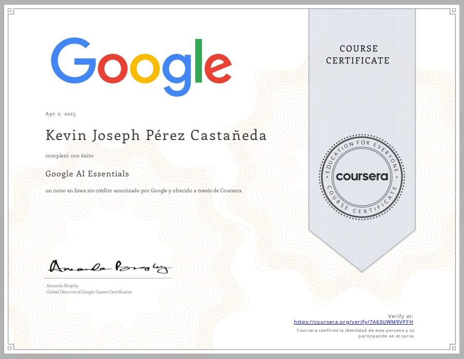
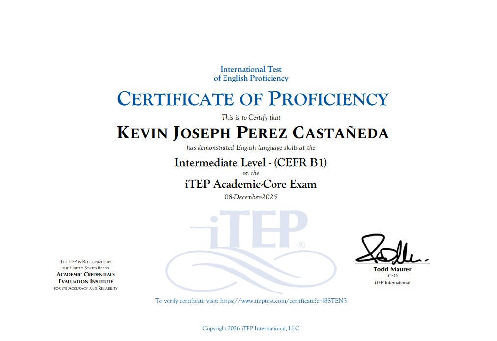

Kevin Joseph Perez Castañeda
Estudiante de Ingenieria en Sistemas Computacionales
Contacto
kevin.2023110081@metropoli.edu.mx+52 2212022170
Estudiante de Ingenieria en Sistemas Computacionales
Estudiante de 7mo cuatrimestre de Ingenieria en Sistemas Computacionales apasionado por el desarrollo web, programacion, la inteligencia artificial, las bases de datos y el mantenimiento a equipos de computo. Destacado por mi capacidad de aprendizaje rapido y adaptacion, habilidad de trabajo en equipo y resolucion de problemas de manera creativa. Estoy en busca de oportunidades para aplicar mis conocimientos y habilidades en proyectosque me desafien y me permitan crecer profesionalmente.


Desarrollo de un software integral para el control de entradas y salidas de personal. Implementación de lógica de validación de horarios y generación de reportes de puntualidad.
Diseño y arquitectura de la base de datos en MySQL. Creación de tablas normalizadas, relaciones entidad-relación y consultas optimizadas para el manejo masivo de registros de empleados.